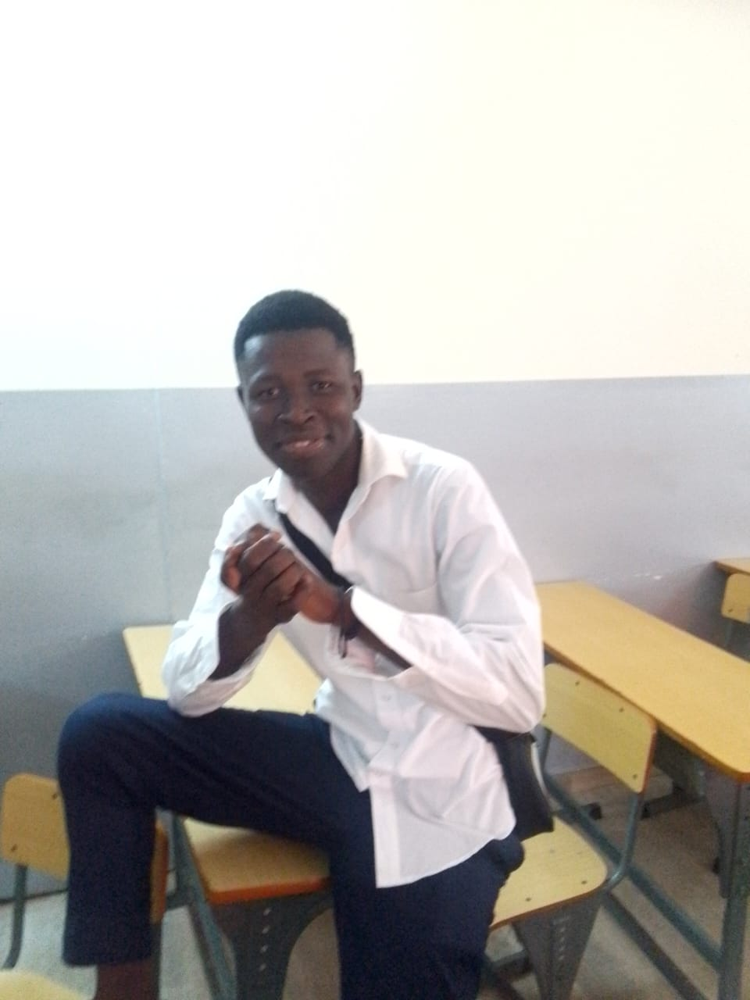
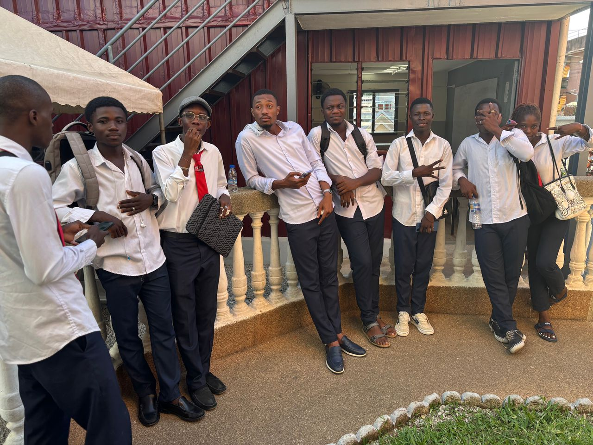

Ma Biographie
Chaque parcours commence par une histoire. La mienne débute à l'École Primaire Publique (EPP) Petionara,
où j'ai effectué mes premières années d'études. J'ai ensuite poursuivi mon parcours au Collège Moderne de Katiola,
où j'ai obtenu le Brevet d'Études du Premier Cycle (BEPC) ,ET au Lycée Moderne de Katiola, où j'ai décroché un baccalauréat scientifique.
Très tôt, je me demandais :
Dans un monde où la tech evolue à une vetesse exponentielle , que dois-je faire pour ne pas etre depasser d'ici peu ?
Cette curiosité m'a progressivement conduit vers l'univers de l'informatique.
J'y ai découvert bien plus qu'une discipline :
un monde où la créativité, la logique et l'innovation se rencontrent pour résoudre des problèmes concrets.
MA MOTIVATION
Aujourd'hui, dans une société profondément marquée par le numérique,
je suis convaincu que l'informatique est un formidable levier pour construire l'avenir.
C'est cette conviction qui m'a poussé à me spécialiser dans le développement web.
À travers chaque ligne de code, je cherche à apprendre, à progresser et à créer des solutions utiles qui répondent aux besoins des utilisateurs.
Ce portfolio est le reflet de cette aventure. Il retrace mon évolution, présente mes réalisations et témoigne de mon engagement à continuer d'apprendre,
d'innover et de grandir dans le domaine des technologies.
Retour à l'accueil